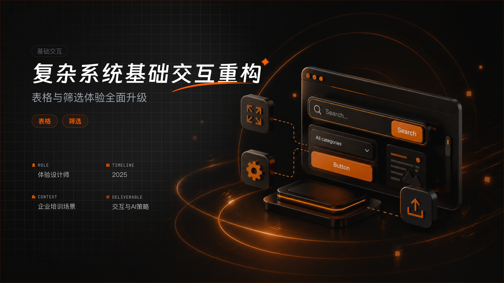
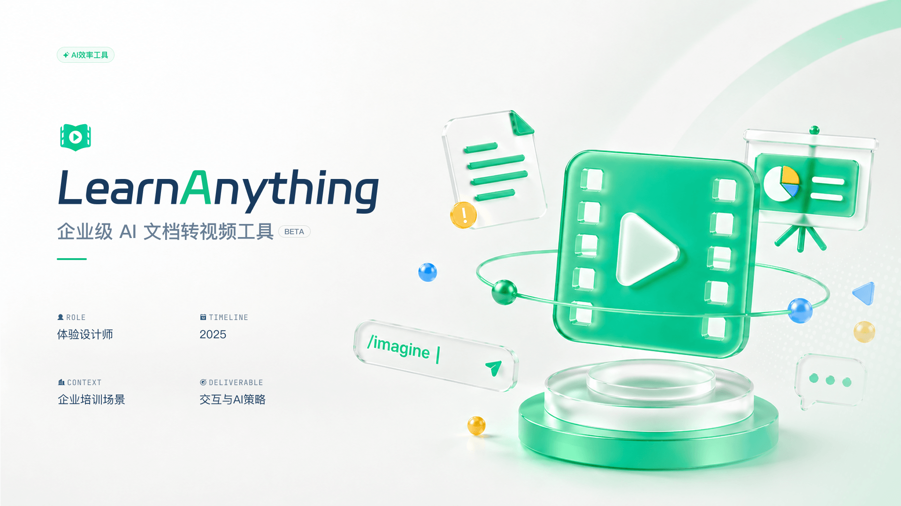
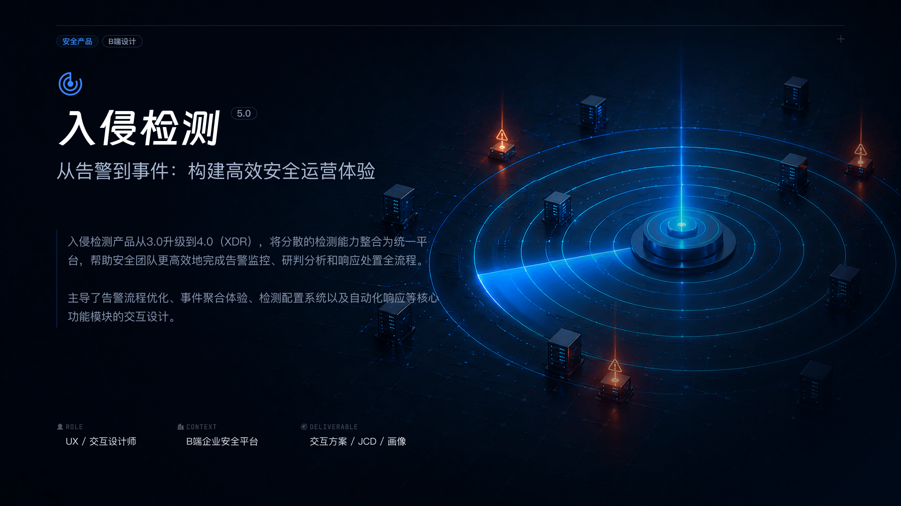

Name
杜明轩
Gender
男
Age
27
Experience
5 年
Degree
本科
Focus
B 端体验设计
用结构化设计能力处理复杂业务问题，同时将 AI 融入调研、表达与动效探索，让设计从体验交付延伸到效率赋能。
Sketch
Figma
PS
AE
GPT
精选案例
2023 - 2026

复杂系统基础交互重构
围绕企业培训场景，对表格与筛选体验进行系统化升级，提升复杂信息处理效率。

LearnAnything AI 文档转视频工具
面向企业培训场景，探索 AI 驱动的文档转视频流程，提升内容生产与学习效率。

入侵检测安全运营体验设计
从告警到事件，重构安全运营链路，整合分散检测能力并提升研判处置效率。
Motion Studies
AI 辅助动效与微交互探索
Loading / Homepage / Brand Motion
动效设计与微交互合集
整理加载反馈、首页氛围、品牌运营等动效探索，让界面状态更有节奏与情绪。
设计理念
01. 逻辑重于表现
在 B 端设计中，理清业务链路永远是第一位的。视觉应当服务于信息层级与操作效率，而非喧宾夺主。
02. 克制与统一
减少无意义的装饰，保持全局组件和交互模式的统一，降低用户的学习成本，建立产品信任感。
03. 懂技术的体验设计
理解前端框架和实现成本，能产出可落地的高质量设计方案，与研发团队顺畅协作。
2020.09 至今
中级 UI/UX 设计师
青藤云安全
- 负责多个核心安全产品的视觉、体验与动效设计，覆盖告警监控、事件研判、配置管理等复杂 B 端场景。
- 参与产品从需求理解、交互方案、视觉落地到研发协作的完整流程，推动安全业务体验持续优化。
2019.07 - 2019.12
视觉设计实习生
航班管家 · 高铁管家设计部
- 参与基础组件库与运营组件库的运营维护，协助提升设计资产复用效率。
- 负责运营设计、页面设计与动效设计支持，积累从视觉表达到业务转化的设计经验。
2016 - 2020
视觉传达设计专业
江汉大学
- 系统学习视觉设计、版式构成、品牌表达与信息传达方法，建立扎实的视觉基础。
- 在平面视觉与数字界面之间形成跨媒介设计思维，为后续 UI/UX 设计实践打下基础。